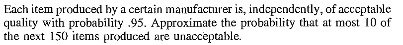
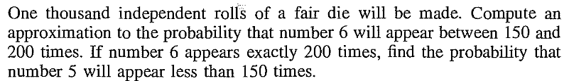
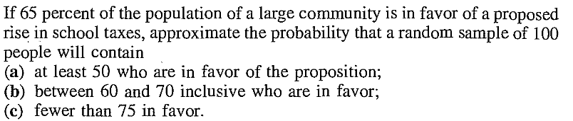

Proof: Let $Y_n = X_n-X.$ Since [QED]
Proof:Next semester.[QED]
This theorem is a manifestation of statistical regularity. Whatever may the true distribution of the $X_i$'s be, if you average a large number of $X_i$'s you get close approximation to the normal distribution. This allows statistician to deal with averages of a large number of IID observations without knowing the true underlying distribution. Let's look at a typical example.EXAMPLE 1: If 40% of the population of a city supports a poll candidate, then what is the approximate probability that a random sample of 500 persons from the city will have at least 250 supporters?
SOLUTION: Here we think of the sampling procedure as 500 trials of the same random experiment: Pick a person at random from the population of the city. We shall assume that the trials are IID. Now here we are introducing an approximation: the first membr of the sample was drawn from the entire population, but since we generally sample without replacement in such a scenario, the second member of the sample was drawn from a population of size one less than in the case of the first member. So the random experiment has actually changed, and they are not independent also. But since the population is large (much larger than 500), so we are ignoring both the non-identical and dependent nature and assuming IID. We also have a random variable: $$X(\omega) = \left\{\begin{array}{ll}1 &\text{if }\omega\mbox{ supports the candiate}\\ 0&\text{otherwise.}\end{array}\right.$$ Here$\omega$ is the person sampled. Each trial gives rise to one copy of this random variable, so we have $X_1,...,X_{500}$ IID $Bernoulli(0.4).$ This $0.4$ came from the 40% given in the problem. By CLT we have $$\frac{\sqrt n (\bar X_n-\mu)}{\sigma}\rightarrow N(0,1)$$ as $n\rightarrow \infty,$ where $\mu = E(X_i)$ and $\sigma^2 = V(X_i)< \infty.$ We shall write this as $$\bar X_n \stackrel{\bullet}{\sim} N\left(\mu,\frac{\sigma^2}{n}\right)$$ for large $n.$ Here $\stackrel\bullet\sim$ means "approximately distributed as". In our case, $\mu = 0.40$, $\sigma^2 = 0.4(1-0.4) = 0.24$ and $n=500.$ So $$\bar X_{500} \stackrel{\bullet}{\sim} N\left(0.40,\frac{0.24}{500}\right),$$ or $$\sum_1^n X_i \stackrel{\bullet}{\sim} N(0.40\times 500,0.24\times 500)\equiv N(200, 120).$$ Nowe we can find the required probability as $$P(\sum_1^{500} X_i \geq 250) \approx 1-\Phi\left(\frac{250-200}{\sqrt{120}}\right).$$ This probability may be obtained by looking up standard $N(0,1)$ tables or using R as1-pnorm((250-200)/sqrt(120))■ In this problem we knew the distribution of the $X_i$'s, but we never really made any use of it, except to compute $E(X_i)$ and $V(X_i).$
EXERCISE 1: [rossdistrib10.png]

::EXERCISE 2: [rossdistrib8.png]

EXERCISE 3: [rossdistrib5.png]

Proof: Recall that convergence in probability means that for every $\varepsilon > 0$, $$ P(|X_n - X| > \varepsilon) \rightarrow 0. $$
We must show that for every $\varepsilon > 0$, $$ P\bigl(|(X_n + Y_n) - (X + c)| > \varepsilon\bigr) \rightarrow 0. $$ Fix $\varepsilon > 0$. By the triangle inequality, $$ |(X_n + Y_n) - (X + c)| = |(X_n - X) + (Y_n - c)| \leq |X_n - X| + |Y_n - c|. $$ Hence, $$ \bigl\{|(X_n + Y_n) - (X + c)| > \varepsilon\bigr\} \subseteq \bigl\{|X_n - X| + |Y_n - c| > \varepsilon\bigr\}. $$ Now observe that $$ \bigl\{|X_n - X| + |Y_n - c| > \varepsilon\bigr\} \subseteq \bigl\{|X_n - X| > \varepsilon/2\bigr\} \cup \bigl\{|Y_n - c| > \varepsilon/2\bigr\}. $$ Indeed, if both $$ |X_n - X| \leq \varepsilon/2 \quad\text{and}\quad |Y_n - c| \leq \varepsilon/2, $$ then $$ |X_n - X| + |Y_n - c| \leq \varepsilon. $$ Therefore, by the union bound, $$ P\bigl(|(X_n + Y_n) - (X + c)| > \varepsilon\bigr) \leq P(|X_n - X| > \varepsilon/2) + P(|Y_n - c| > \varepsilon/2). $$ Since $X_n \rightarrow X$ in probability, $$ P(|X_n - X| > \varepsilon/2) \rightarrow 0. $$ Since $Y_n \rightarrow c$ in probability, $$ P(|Y_n - c| > \varepsilon/2) \rightarrow 0. $$ Taking limits as $n \rightarrow \infty$, we obtain $$ \lim_{n\rightarrow\infty} P\bigl(|(X_n + Y_n) - (X + c)| > \varepsilon\bigr) = 0. $$ Hence, $$ X_n + Y_n \xrightarrow{P} X + c. $$ Therefore $X_n + Y_n$ converges in probability to $X + c$. \end{proof} [QED]EXERCISE 4: Let $X_n\rightarrowD N(0,1)$ and $Y_n\rightarrowP 5.$ Then what is the limiting distribution of $X_n+Y_n?$
EXERCISE 5: Let $X_n\rightarrowD X$ and $Y_n\rightarrowP Y.$ Show that $X_n+Y_n\rightarrowD X+Y$ need not hold.
EXERCISE 6: Let $X_n\rightarrowD N(0,1)$, $Y_n\rightarrowP 5$ and $Z_n\rightarrowP 4$ with $z_n > 0.$ Then what is the limiting distribution of $\frac{X_n+Y_n}{\sqrt {Z_n}}?$
EXERCISE 7: Suppose that $\sqrt n(X_n-\theta)\rightarrowD Z$ and $Y_n\rightarrowP a.$ Show that $\sqrt n(X_nY_n-a\theta)\rightarrowD aZ.$
EXERCISE 8: Let $X_n$ be asymptotically $N\left(\mu,\frac{\sigma^2}{n}\right).$ What is the asymptotic distribution of $\frac{X_n}{1+X_n}?$
EXERCISE 9: Let $T_n$ be a consistent estimator of $\theta,$ and let $S_n$ be a consistent estimator of $\sigma^2.$ Show that the Studentized statistic $\frac{T_n-\theta}{\sqrt{S_n}}$ has the the same asymptotic distribution as $\frac{T_n-\theta}{\sigma},$ whenever an asymptotic distribution exists.
EXERCISE 10: Let $X_n\rightarrowD X$ and $X_n+Y_n\rightarrowD X+1.$ Does this imply that $Y_n\rightarrowP 1?$
Proof:Nice proof using Skorohod in Resnick (p262).[QED]
Lots of applications.EXERCISE 11: Suppose that $\sqrt n(S_n^2-\sigma^2)\rightarrowD N(0,\theta^2).$ Show that $\sqrt n(S_n-\sigma)\rightarrowD N\left(0,\frac{\theta^2}{4 \sigma^2}\right).$
EXERCISE 12: If $\sqrt n(\bar X_n-\mu)\rightarrowD N(0,1),$ show that $\sqrt n(\log \bar X_n-\log \mu)\rightarrowD N(0,\frac{1}{\mu^2}).$
EXERCISE 13: If $\sqrt n(T_n-\theta)\rightarrowD N(0,\sigma^2)$ for some $\theta\neq 0,$ then show that $\sqrt n\left(\frac{1}{T_n}-\frac 1\theta\right)\rightarrowD N(0,\frac{\sigma^2}{\theta^2}\right).$
EXERCISE 14: We toss a coin with unknown $P(H)=p\in (0,1).$ Let $X_n = $ proportion of heads. Find an asymptotic distribution for the odds ratio $\frac{X_n}{1-X_n}.$
EXERCISE 15: $T_n$ is an estimator for a parameter $\theta$ with asymptotic distribution $N\left(\theta, \frac{\sigma^2}{n}\right).$ Use deltan method to obtain an approximate 95% confidene interval for $e^\theta.$
EXERCISE 16: Variance stabilising transform
EXERCISE 17: Use the above theorem to obtain asymptotic variabce of the sample CV.
chat/Multivariate_Delta_Method_Solution_Manual.pdf chat/Delta_Method_Applications.pdfEXAMPLE 2: Suppose that $X_n\rightarrowD X$ and $Y_n\rightarrowD Y.$ Does this imply $(X_n,Y_n)\rightarrow (X,Y)?$ ■
Proof: Use characteristic function (to be covered in the next page). [QED]
EXERCISE 18: Prove multivariate CLT from univariate CLT using the Cramer-Wold device.
EXERCISE 19: Prove multivariate delta method from univariate delta method using the Cramer-Wold device.
EXERCISE 20: Let $(X_n,Y_n)$ be an iid sequence of random vectors with mean $(\mu, \nu)$ and some (finite) covariance matrix. Find the asymptotic distribution of $(\bar X_n,\bar Y_n).$
EXERCISE 21: A (pssibly biased) die is rolled $n$ times. Let $X_{i,n}$ be the proportion of face $i.$ Find the asymptotic joint distribution of $(X_{1,n),...,X_{6,n}).$